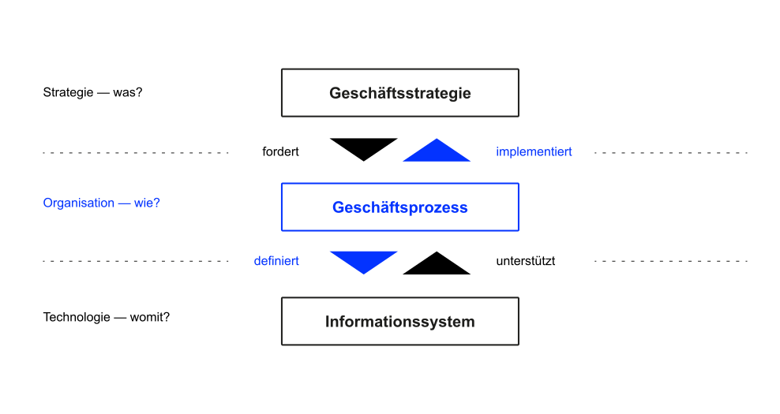
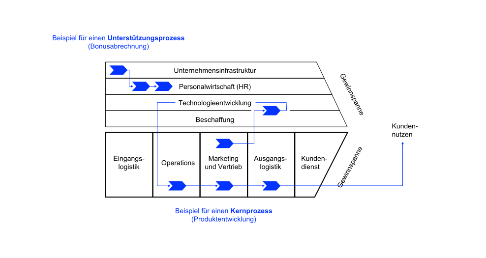
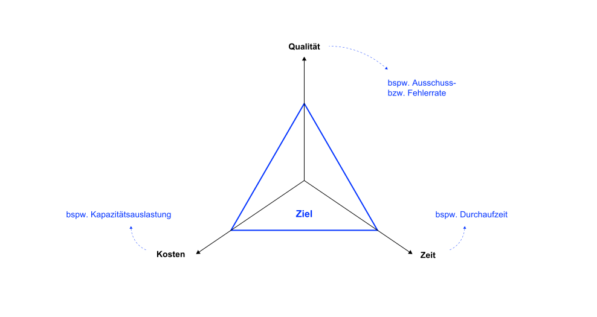
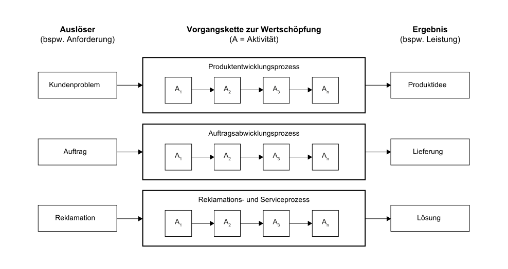
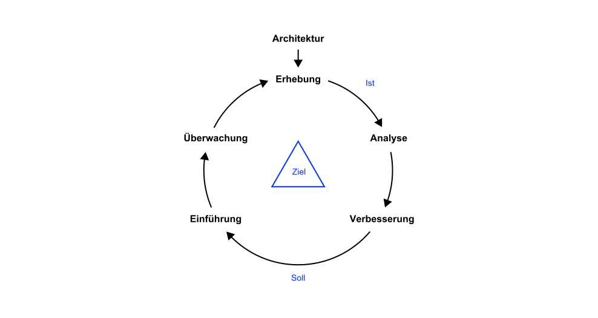

K7 Geschäftsprozesse
Grundzüge der Wirtschaftsinformatik (GWI)
Motivation
If you can’t describe what you are doing as a process, you don’t know what you’re doing. William Edwards Demin, Physiker, Statistiker und Pionier im Qualitätsmanagement
Wenn Sie einen scheiß Prozess digitalisieren, haben Sie einen scheiß digitalen Prozess Thorsten Dirks, früherer CEO der Teléfonica Deutschland
In Zeiten der Digitalisierung orientieren sich viele Unternehmen an Vorbildern, die mit agilen Arbeitsweisen, Automatisierung oder mit Hilfe von IoT enorme Effizienzsteigerungen erreichen. Oftmals vergisst man jedoch die vor oder mit der Digitalisierung zu erledigenden Hausaufgaben, vor allem ein gutes Prozessmanagement. Ohne ein solides Fundament, bei dem die Arbeitsabläufe klar sind, laufen viele Digitalisierungsinitiativen ins Leere.
Deshalb schauen wir uns in diesem Kapitel Geschäftsprozessmanagement etwas näher an. Unter Geschäftsprozessmanagement versteht man die Planung, Organisation, Steuerung und Kontrolle der Wertschöpfungskette eines Unternehmens im Hinblick auf die Unternehmensziele.
Lernergebnisse
Nach dieser Einheit können Sie
- erklären, was Geschäftsprozesse sind und welche Bedeutung sie haben,
- Geschäftsprozesse und deren Abhängigkeiten im Business Engineering (Modell) verorten,
- Kern- und Unterstützungsprozesse unterscheiden und Beispiele geben,
- Aufgaben, Ziele und die Vorgehensweise des Geschäftsprozessmanagement (GPM) nennen und
- erläutern, weshalb GPM für ein Unternehmen wichtig ist.
Business Engineering
Definition
Zur Wiederholung und Einordnung: Unter Business Engineering versteht man die ingenieurmäßige Vorgehensweise bei der Gestaltung eines Unternehmens unter Berücksichtigung von Unternehmensstrategie, Geschäftsprozessen und betrieblichen Informationssystemen.
Business Engineering überspannt den kompletten Prozess von der Strategiefindung und der Gestaltung von Geschäftsmodellen bis zur optimalen Gestaltung der Abläufe sowie zugehöriger Anwendungssysteme (Abts und Mülder 2017; Leimeister 2021).
In diesem und den folgenden Kapiteln fokussieren wir uns auf die Beschreibung und das Managemente von Geschäftsprozesse, also der organisatorischen Abläufe und Strukturen, die die Erreichung der strategischen Ziele ermöglichen.
Visualisierung

Geschäftsprozesse
Definition
Ein Geschäftsprozess ist eine eine zielgerichtete zeitlich-logische Folge oder Vorgangskette von Aktivitäten (bzw. Tätigkeiten, Geschäftsvorgänge), die für das Unternehmen einen Beitrag zur Wertschöpfung leistet (Leimeister 2021).
In der Regel sind diese Prozesse aus der Geschäftsstrategie abgeleitet und am Kunden orientiert. Kundenorientierung bedeutet, dass Geschäftsprozesse entweder direkt oder indirekt einen Wert für Kunden erzeugen.
Merkmale
- Geschäftsprozesse bilden die Basis für die Wertschöpfung des Unternehmens. Sie dienen dem Kunden (Problemlösung) und dem Unternehmen (Gewinnerzielung).
- Geschäftsprozesse sind Routineaufgaben des Unternehmens, die weitestgehend Standards folgen und keine einmaligen Einzelprojekte.
- Jeder Geschäftsprozess hat einen Auslöser (bpsw. einen Auftrag) und ein Ergebnis (bspw. ausgeführter Auftrag und Rechnung für den Kunden).
- Die Aktivitäten des Geschäftsprozesses können (teilweise) parallel, wiederholt oder alternativ ausgeführt werden.
- Geschäftsprozesse queren Abteilungen und enden nicht an der Unternehmensgrenze. Deshalb sind an Geschäftsprozessen in der Regel mehrere organisatorische Einheiten des Unternehmens und gegebenenfalls externe Partner (bspw. Kunden beteiligt.
Der Auslöser des Geschäftsprozess für dazu, dass mehrere Aktivitäten bzw. Teilprozesse ausgeführt werden. Während eine Aktivität nicht weiter sinnvoll unterteilt werden kann, enthalten Teilprozesse wiederum mehrere Aktivitäten. Bei komplexen Zusammenhängen wird zunächst auf einer hohen Abstraktionsstufe eine Unterteilung in Teilprozesse vorgenommen und danach werden Teilprozesse in einzelne Aktivitäten unterteilt.
Komponenten

- Kunde: Der Kunde löst Geschäftsprozesse entweder direkt (bspw. durch Erteilung eines Auftrages) oder indirekt (bspw. durch die Notwendigkeit der Anstellung von Mitarbeitern) aus
- Auslöser: Jeder Geschäftsprozess startet mit einem auslösenden Ereignis.
- Leistungserstellung: Die Leistung wird durch die Verkettung unterschiedlicher Aktivitäten erbracht. Diese können parallel, wiederholt oder alternativ ausgeführt werden.
- Ergebniss: Ergebnisse von Geschäftsprozessen sind entweder Produkte oder Dienstleistungen, die für den Kunden von Wert sind und für die der Kunde einen entsprechenden Preis bezahlt (Kernprozesse) oder Leistungen, die indirekt dazu beitragen oder den Bestand und die Zukunft eines Unternehmens sichern (Unterstützungsprozesse).
- Geschäftsprozessverantwortlicher: Derjenige Mitarbeiter, der die Verantwortung für die Effektivität und Effizienz eines Geschäftsprozesses trägt. Zur Steuerung dienen Ziele und Kennzahlen.
- Ziele und Kennzahlen: Das Geschäftsprozessmanagement stellt mit Hilfe von Zielen und Kennzahlen sicher, dass die Effektivität und die Effizienz der Unternehmensabläufe erhöht werden.
Ziel des Geschäftsprozessmanagements: Effektivität und Effizienz des Unternehmens erhöhen. Geschäftsprozesse sind dann effektiv, wenn ihre Ergebnisse Bedürfnisse und Erwartungen der Kunden erfüllen und gleichzeitig dazu beitragen, die Unternehmensziele zu erreichen („die richtigen Dinge tun“). Geschäftsprozesse sind dann effizient, wenn die Ergebnisse mit möglichst geringem Ressourceneinsatz, also wirtschaftlich, erzeugt werden („die Dinge richtig tun“)
Kern- und Unterstützungsprozesse

In den Kernprozessen findet die originäre Wertschöpfung durch Verkettung von Aktivitäten für externe Kunden statt, sie enthalten nicht-imitierbares Wissen (Kernkompetenzen) eines Unternehmens. Beispiel: Produktentwicklung
Unterstützungsprozesse erzeugen Leistungen für interne Kunden und ermöglichen den reibungslosen Ablauf der Kernprozesse. Sie haben keine strategische Bedeutung. Beispiel: Lohn- und Gehaltsabrechnung
In Unternehmen, die entlang der Wertschöpfungskette organisiert sind, durchlaufen sowohl Kernprozesse als auch Unterstützungsprozesse in der Regel meist mehrere organisatorischen Einheiten (oft Abteilungen). Die Prozesse sind also „abteilungsübergreifend“. Die Optimierung solcher Prozesse erfordert prozessorientierte Denken. Im Kontrast zum funktionalen Denken, das sich mit den Aufgaben des eigenen Funktionsbereichs beschäftigt, umfasst prozessorientiertes Denken die gesamte Prozesskette, ggf. auch über mehrere Abteilungen oder Bereiche hinweg.
Ein typisches Beispiel für die unterschiedliche Sichtweise von Prozess- und Funktionsdenken ist die Beschaffung von Waren und Dienstleistungen. Im Rahmen der Gestaltung der Beschaffungsabläufe tritt regelmäßig die Frage auf, welchem Bereich die Teilaufgabe der „Rechnungsprüfung“ zugeordnet werden soll: der Logistik oder dem Rechnungswesen. Für den Bereich Logistik spricht, dass die Rechnungsprüfung die qualitative und mengenmäßige Kontrolle durchführt. Die Logistik verfolgt unter anderem das Ziel, die richtige Ware in der richtigen Menge und Qualität zur richtigen Zeit zum Empfänger zu transportieren. Das Rechnungswesen beansprucht oft die Verantwortung für die Überprüfung von Kontierungen und Zahlungsbedingungen. Das Rechnungswesen hat unter anderem das Ziel, eine ordnungsgemäße Bilanz und Gewinn- und Verlustrechnung aufzustellen. Wird der Prozess gesplittet, beispielsweise in der Art, dass zunächst die qualitative und Mengenkontrolle in der Logistik durchgeführt wird und später nach Weitergabe der Dokumente die kaufmännische bzw. finanztechnische Prüfung im Rechnungswesen erfolgt, sind fast zwangsläufig durch den Bearbeiterwechsel Verzögerungen zu erwarten.
Zieldimensionen

Das magische Dreieck beschreibt die drei Zieldimensionen der Geschäftsprozessoptmierung bestehend aus Zeit, Qualität und Kosten. Diese Drei Dimensionen stehen immer in Beziehung miteinander und können nicht unabhängig voneinander optimiert werden.
Wenn beispielsweise unter Zeitdruck produziert werden muss, steigt die Wahrscheinlichkeit für Fehler. Die Nachbesserung und Korrektur dieser ist dann mit weiterer Zeit und weiteren Kosten verbunden. Oder umgekehrt: wenn die Qualität erhöht werden soll, ist in der Regel mehr Zeit und/oder Geld notwendig.
Im Geschäftsprozessmanagement müssen deshalb die drei Zieldimensionen abgewogen werden und Prioritäten gesetzt werden.
Beispiele

Geschäftsprozessmanagement
Definition
Das Geschäftsprozessmanagement ist dafür verantwortlich, Geschäftsprozesse so zu gestalten (Architektur), umzusetzen (Einführung), zu kontrollieren (Überwachung, Erhebung, Analyse) und zu verbessern, dass das Unternehmen die gesteckten Ziele möglichst effizient erreicht (Mertens u. a. 2016).
Das Geschäftprozessmanagement implementiert einen kontinuierlichen Verbesserungsprozess, der Geschäftsprozessse kontinuierlich überwacht, analysisert und verbessert.
Ablauf

- Erhebung
- Modellierung des Ist-Prozesses und der verwendeten Informationssysteme
- Erhebung der Zielerreichung über Prozesskennzahlen (z. B. Durchlaufzeiten, Kosten)
- Analyse
- Identifikation organisatorischer und IT-technischer Schwachstellen
- Verbesserung
- Auswahl und Umsetzung von Verbesserungskonzepten (Harmonisierung, Automatisierung, Auslagerung, etc.)
- Konzeption der geeigneten IT-Unterstützung
- Modellieren des Soll-Prozesse (Aktivitäten, Ereignisse, Dateninput/Datenoutput, Anwendungssysteme, Prozessbeteiligte und -verantwortliche, etc.)
- Definition bzw. Aktualisierung der Ziele und Prozesskennzahlen
- Einführung
- Einführen der Soll-Prozesse im Unternehmen (Schulung, Training, etc.)
- Aktualisierung bzw. Einführung der Anwendungssysteme
- Überwachung
- (Automatisierte) Erhebung der Prozesskennzahlen und Berichterstattung an die Prozessverantwortliche
- Analyse der Prozesskennzahlen bzw. der Prozessleistung
Mögliche Fragestellungen in der Analysephase:
- Kann auf Doppelarbeit oder unnötige Administration verzichtet werden?
- Können Aktivitäten bzw. Vorgangsketten vereinfacht und standardisiert werden?
- Können Aktivitäten automatisiert werden?
- Kann die Reihenfolge der Aktivitäten optimiert werden?
- Können Aktivitäten so gestaltet werden, dass Fehler unwarscheinlicher werden?
- Können nicht wertschöpfende Elemente eliminiert werden?
- Kann die Arbeitsteilung optimiert werden?
Ziele
Das Geschäftsprozessmanagement möchte Effektivität und Effizienz des Unternehmens steigern.
In der Regel sind Unternehmen in einer Marktwirtschaft gewinnorientiert. Das Geschäftsprozessmanagement zielt in solchen Untenrehmen deshalb darauf ab, die Kosten durch höhere Effizienz zu senken und Umsätze durch eine bessere Kundenbindung zu erhöhen (Schmelzer und Sesselmann 2020).
Konkrete Ziele sollten aus den Unternehmenszielen abgeleitet (siehe Business Engineering Modell, Abbildung 1) und in spezifische und messbare Ziele und Kenngrößen für einzelne Geschäftsprozesse überführt werden.
Nach außen gerichtete Ziele
- Prozessqualität (weniger Reklamationen und Beanstandungen durch größere Stabilität)
- Prozesstransparenz für den Kunden (höhere Kundenzufriedenheit und Kundenbindung)
- Beschleunigte Kommunikation mit Marktpartnern
Nach innen gerichtete Ziele
- Effizienz (Straffung von Arbeitsabläufen und Reduktion von Bearbeitungs- und Liegezeiten)
- Transparenz (höhere Aktualität von Informationen, definierte Schnittstellen)
Grundformen zur Optimierung
- Weglassen: Überprüfung der Notwendigkeit von Prozessen oder Teilprozessen zur Funktionserfüllung, Abschaffung von Medienbrüchen, Abschaffung von nicht sinnvollen Genehmigungsschritten
- Auslagern: Vergabe von Teilprozessen oder vollständigen Prozessketten durch externe spezialisierte Dienstleister (bspw. Buchführung und Bilanzierung durch einen Steuerberater)
- Zusammenfassen: Arbeitsteilige Aufgaben werden so zusammengefasst, dass ein Bearbeiter zusammengehörige Teilprozesse vollständig ohne Bearbeiterwechsel durchführt (z. B. Kundenberatung und Auftragserfassung bis zur Erstellung der Auftragsbestätigung)
- Parallelisieren: Erhöhung der Arbeitsteilung bei parallelisierbaren Teilschritten (z. B. Klausurkorrektur durch mehrere Prüfer je Teilgebiet)
- Verlagern: Verlagerung von Prozessschritten, so dass Aufgaben frühzeitig durchgeführt werden, ohne später zu einem Flaschenhals zu werden (z. B. vollständige Erfassung der Kundeninformationen bei Auftragserfassung)
- Beschleunigen: Einsatz von zeitsparenden Arbeitsmitteln (Dokumentenmanagementsystem ersetzt Papierdokumentation, Reduzierung von Warte- und Liegezeiten durch Erhöhung von Kapazitäten
- Schleifen vermeiden: Schleifenfreie Gestaltung von Prozessen, d. h. Verzicht auf Wiederholung von Teilschritten eines Prozesses (z. B. Onlineerfassung aller Kunden und Bestelldaten im Rahmen der Auftragserfassung und Freigabe des Auftrages erst nach vollständiger Plausibilisierung der Daten)
- Ergänzen: Vermeidung von nachgelagerten Prozessen zur „Schadensbeseitigung“ (z. B. Ergänzung einer Qualitätskontrolle nach der Teilemontage um einen möglichen „Nachbearbeitungsprozess“ oder eine „Rückholaktion fehlerhafter Ware“ zu vermeiden).
✏️ Aufgaben
A1: Geschäftsprozesse und Anwendungssysteme
Weshalb ist die Geschäftsprozessanalyse zur Erfassung des Ist-Zustandes der Unternehmensprozesse (bspw. im Vertrieb) vor der Einführung eines Anwendungssystems (bspw. eines CRM-Systems) sinnvoll?
A2: Erhebung
Suchen Sie sich jeweils einen der folgenden Geschäftsprozesse aus und beschreiben Sie diesen den anderen Mitgliedern der Gruppe (verbale Beschreibung).
- Angebotsbearbeitung in einem Produktionsbetrieb
- Bearbeitung von Reklamationen in einem Online-Shop
- Durchführung eines Bewerbungsgesprächs in einem Unternehmen
- Optimierung eines Geschäftsprozesses in einem Unternehmen
- Verkauf eines Autos in einem Autohaus
Dokumentieren Sie Ihre Erkenntnisse in folgender Vorlage.
| Typ | Kern- oder Unterstützungsprozess |
| Auslöser | |
| Aktivitäten | |
| Ergebnis | |
| Prozessziele | |
| Verantwortlicher |
Weshalb handelt es sich um einen Geschäftsprozess?
A3: Analyse
Prozesse können anhand von drei wesentlichen Kriterien beurteilt werden. Zeigen Sie, anhand welcher Kennzahlen die drei Kriterien in einem der folgenden Prozesse beurteilt werden können.
- Angebotsbearbeitung in einem Produktionsbetrieb
- Bearbeitung von Reklamationen in einem Online-Shop
- Durchführung eines Bewerbungsgesprächs in einem Unternehmen
- Optimierung eines Geschäftsprozesses in einem Unternehmen
- Verkauf eines Autos in einem Autohaus
A4: Verbesserung
Vervollständigen Sie in untenstehender Tabelle die Möglichkeiten zur Optimierung/Restrukturierung von Prozessen.
| Konzept/Methode | Erläuterung | Beispiel |
|---|---|---|
| Weglassen | Zur Funktionserfüllung nicht notwendige Prozessschritte abschaffen | Abschaffung der Zeiterfassung durch Einführung der Vertrauensarbeitszeit |
| Auslagern | Vergabe der Buchführung und Bilanzierung an einen Steuerberater | |
| Zusammenfassen | ||
| Parallelisieren | ||
| Verlagern | Verlagerung von Prozessschritten um bspw. Flaschenhälse zu vermeiden | |
| Beschleunigen | Versand von Rechnungen per Mail statt per Post | |
| Ergänzen | ||
| Schleifen vermeiden | Verzicht auf Wiederholung von Teilschritten eines Prozesses |
A5: Analyse und Verbesserung
Ein fiktiver Maschinenhersteller organisiert seine Auftragsbearbeitung wie folgt:
- Der Prozess beginnt beim Vertriebsleiter, der sich persönlich um eingehende Anfragen der Kunden kümmert.
- Danach wird das Angebot vom Sachbearbeiter A an den Kunden versandt. Bevor das Angebot verschickt wird, wird es vom Vertriebsleiter kontrolliert. Da der Vertriebsleiter nicht immer anwesend ist, kann es vorkommen, dass ein vom Sachbearbeiter A fertig erstelltes Angebot einige Tage liegen bleibt.
- Wenn der Kunde eine Bestellung vornimmt, wird diese vom Sachbearbeiter C manuell geprüft und danach vom Sachbearbeiter D im Auftragsbearbeitungssystem erfasst.
- Der Kunde erhält eine Auftragsbestätigung, nachdem der Vertriebsleiter den Auftrag gesehen und freigegeben hat.
- Nach der Erfassung des Auftrages geht der Auftrag an den Leiter der Logistikabteilung. Dieser entscheidet persönlich, ob ein Teil vom Lager entnommen werden kann, beschafft werden muss oder gar noch zu produzieren ist.
- Falls er sich unsicher ist, fragt er beim Vorstand nach.
- Der Lagerleiter erhält daraufhin den Auftrag, das Material auszuliefern. Wenn er an diesem Tag nicht im Betrieb anwesend ist, übergibt er den Auftrag erst am folgenden Werktag an einen seiner Sachbearbeiter (z. B. H.)
- Der Sachbearbeiter (hier H) entnimmt das Teil, versendet es an den Kunden und löst eine Nachbestellung des Ersatzteiles beim zuständigen Lieferanten aus.
- Nach dem Versand übermittelt Sachbearbeiter H im Lager seinem Vorgesetzten die Abgangsbuchung. Dieser prüft den Beleg und verschickt ihn an den Leiter des Rechnungswesens.
- Der Leiter Rechnungswesen gibt den Beleg an den Leiter der Abteilung Buchhaltung und dieser wiederum an einen seiner Sachbearbeiter. Da der Leiter Rechnungswesen häufig vom Vorstand für Planungsaufgaben eingesetzt wird, bleiben die Belege häufig einige Tage liegen.
- Der Sachbearbeiter M erstellt in diesem Fall die Rechnung und verschickt sie an den Kunden.
Analysieren Sie den Prozess, identifizieren Sie Optimierungspotenziale und Schlagen Sie Verbesserungsmöglichkeiten im Sinne der Prozessoptimierung vor.